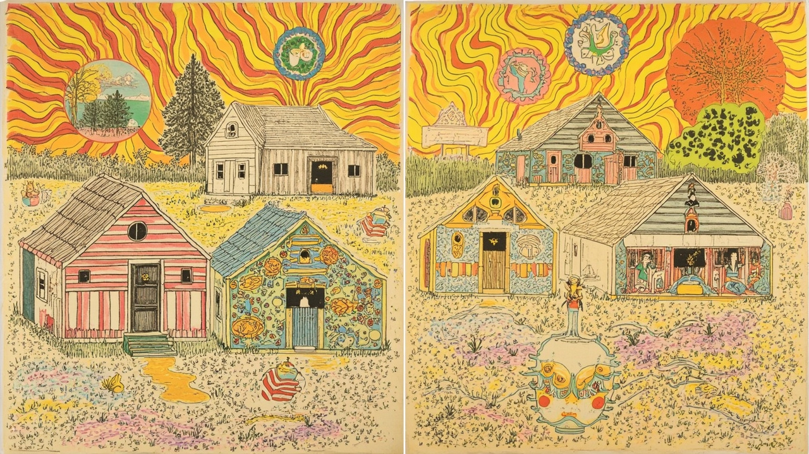

🔊 第一篇：谁在安排我们听见什么
已上线1970 年代科罗拉多的自由电台实验——从反主流广播到播客、社群音频与 AI voice agent。
声音、食物、信念与资源：反主流共同体如何组织自己
如果说 Vol.1 更关注图像、纸张和视觉文化如何让反主流文化被看见，那么 Vol.2 转向更日常也更隐蔽的组织方式：声音如何聚拢听众，食物如何维持共同生活，信念如何提供方向感，目录如何让资源彼此可见。

| 篇目 | 组织对象 | 媒介 / 技术 | 核心问题 |
|---|---|---|---|
| Colorado Freeform Radio | 听众 | 广播 / 声音 / 电台 | 谁在安排我们听见什么？ |
| True Light Beavers | 日常生活 | 食谱 / 厨房 / 食物 | 谁在喂养共同体？ |
| Brotherhood of Spirit | 方向感 | 信念 / 仪式 / 规则 | 谁在维系共同体的信念？ |
| The Original People's Yellow Pages | 资源连接 | 目录 / 索引 / 黄页 | 谁在连接共同体的资源？ |
从声音到食物到信念到目录，是从"共同在场"到"共同行动"到"共同相信"到"共同找到"——从"我们在一起"到"我们一起做"到"我们相信同一件事"到"我们知道彼此在哪里"。